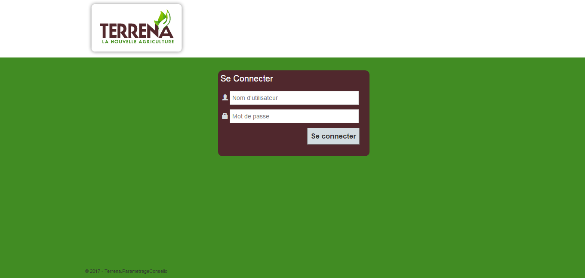
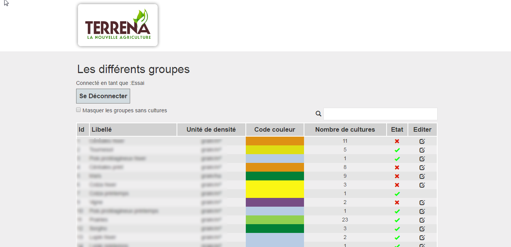
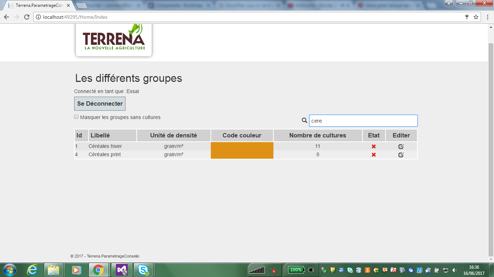
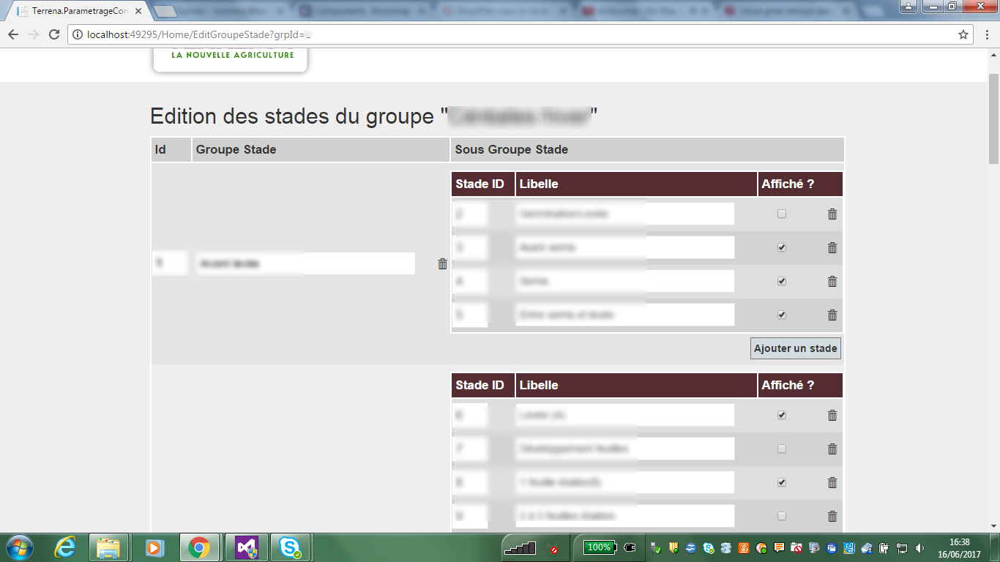
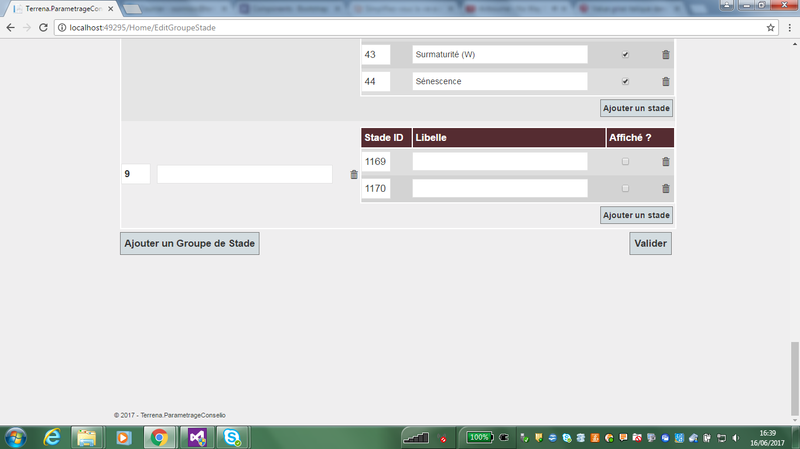
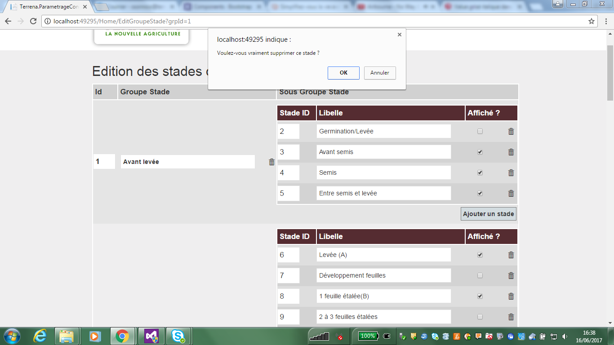
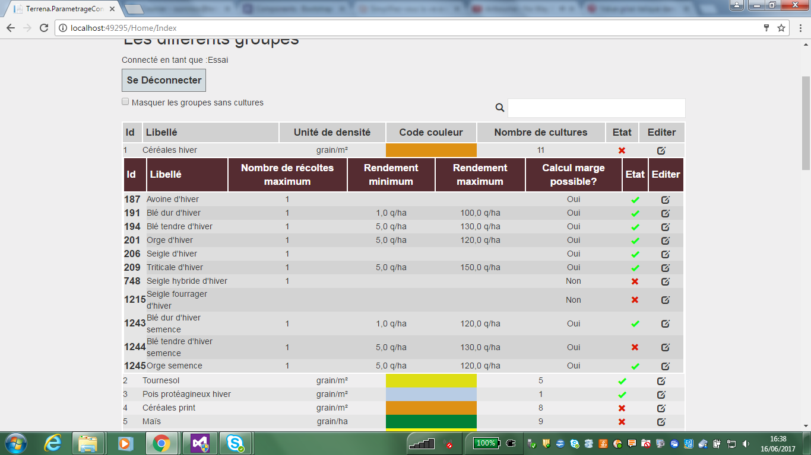
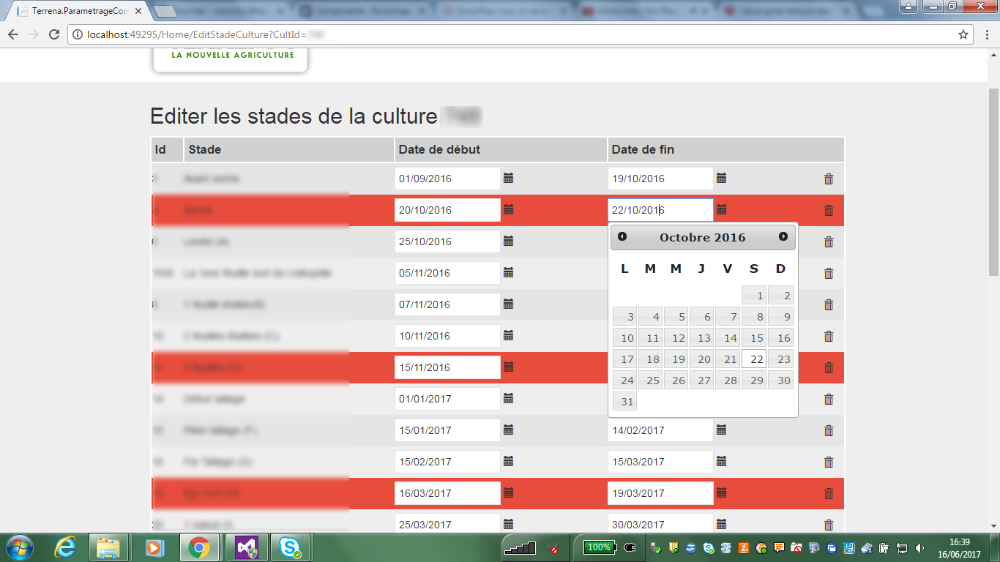
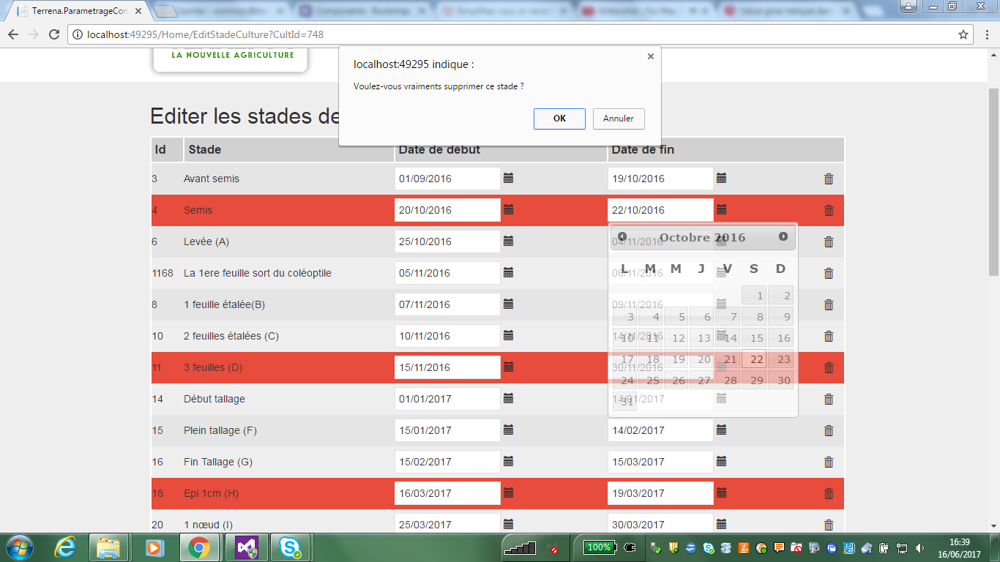
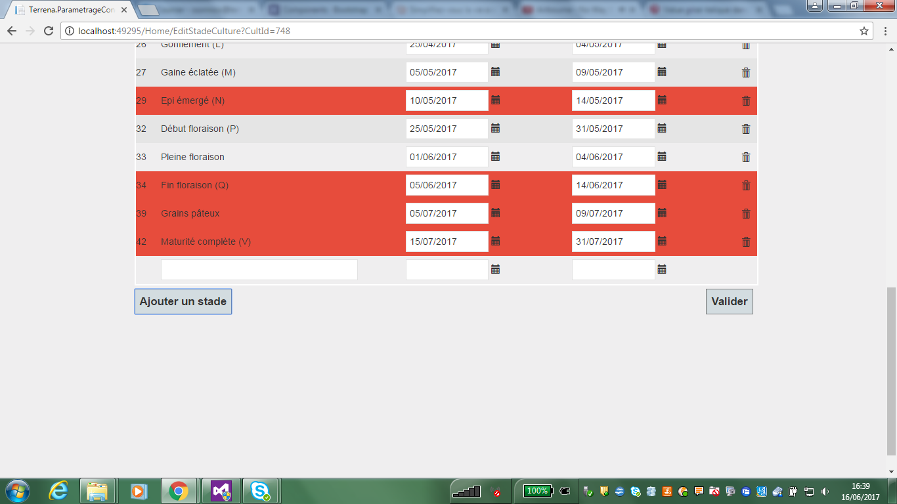

Annexe

Page de Connexion

Tableau Principal de l'application

Barre de recherche

Tableau d'édition des groupes de culture

Bouton d'ajout de groupe de culture

Bouton supprimer un groupe

Sous tableau du tableau principal

Tableau d'édition des dates de stades de culture

DateTimePicker pour modification des dates

Bouton de suppression d'un stade

Bouton d'ajout de stades
Annexe 1 - Images finales du projet